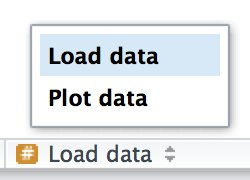

::: status callout-note You are reading the work-in-progress second edition of R for Data Science. This chapter should be readable but is currently undergoing final polishing. You can find the complete first edition at https://r4ds.had.co.nz. :::
Good coding style is like correct punctuation: you can manage without it, butitsuremakesthingseasiertoread. Even as a very new programmer it’s a good idea to work on your code style. Using a consistent style makes it easier for others (including future-you!) to read your work, and is particularly important if you need to get help from someone else. This chapter will introduce to the most important points of the tidyverse style guide, which is used throughout this book.
Styling your code will feel a bit tedious to start with, but if you practice it, it will soon become second nature. Additionally, there are some great tools to quickly restyle existing code, like the styler package by Lorenz Walthert. Once you’ve installed it with install.packages("styler"), an easy way to use it is via RStudio’s command palette. The command palette lets you use any build-in RStudio command, as well as many addins provided by packages. Open the palette by pressing Cmd/Ctrl + Shift + P, then type “styler” to see all the shortcuts provided by styler. #fig-styler shows the results.
library(tidyverse) library(nycflights13)
We talked briefly about names in #sec-whats-in-a-name. Remember that variable names (those created by <- and those created by mutate()) should use only lowercase letters, numbers, and _. Use _ to separate words within a name.
# Strive for: short_flights <- flights |> filter(air_time < 60) # Avoid: SHORTFLIGHTS <- flights |> filter(air_time < 60)
As a general rule of thumb, it’s better to prefer long, descriptive names that are easy to understand, rather than concise names that are fast to type. Short names save relatively little time when writing code (especially since autocomplete will help you finish typing them), but can be time-consuming when you come back to old code and are forced to puzzle out a cryptic abbreviation.
If you have a bunch of names for related things, do your best to be consistent. It’s easy for inconsistencies to arise when you forget a previous convention, so don’t feel bad if you have to go back and rename things. In general, if you have a bunch of variables that are a variation on a theme you’re better off giving them a common prefix, rather than a common suffix, because autocomplete works best on the start of a variable.
Put spaces on either side of mathematical operators apart from ^ (i.e., +, -, ==, <, …), and around the assignment operator (<-).
# Strive for z <- (a + b)^2 / d # Avoid z<-( a + b ) ^ 2/d
Don’t put spaces inside or outside parentheses for regular function calls. Always put a space after a comma, just like in regular English.
# Strive for mean(x, na.rm = TRUE) # Avoid mean (x ,na.rm=TRUE)
It’s OK to add extra spaces if it improves alignment. For example, if you’re creating multiple variables in mutate(), you might want to add spaces so that all the = line up. This makes it easier to skim the code.
flights |>
mutate(
speed = air_time / distance,
dep_hour = dep_time %/% 100,
dep_minute = dep_time %% 100
)
|> should always have a space before it and should typically be the last thing on a line. This makes it easier to add new steps, rearrange existing steps, modify elements within a step, and to get a 50,000 ft view by skimming the verbs on the left-hand side.
# Strive for flights |> filter(!is.na(arr_delay), !is.na(tailnum)) |> count(dest) # Avoid flights|>filter(!is.na(arr_delay), !is.na(tailnum))|>count(dest)
If the function you’re piping into has named arguments (like mutate() or summarize()), put each argument on a new line. If the function doesn’t have named arguments (like select() or filter()) keep everything on one line unless it doesn’t fit, in which case you should put each argument on its own line.
# Strive for
flights |>
group_by(tailnum) |>
summarize(
delay = mean(arr_delay, na.rm = TRUE),
n = n()
)
# Avoid
flights |>
group_by(
tailnum
) |>
summarize(delay = mean(arr_delay, na.rm = TRUE), n = n())
After the first step of the pipeline, indent each line by two spaces. If you’re putting each argument on its own line, indent by an extra two spaces. Make sure ) is on its own line, and un-indented to match the horizontal position of the function name.
# Strive for
flights |>
group_by(tailnum) |>
summarize(
delay = mean(arr_delay, na.rm = TRUE),
n = n()
)
# Avoid
flights|>
group_by(tailnum) |>
summarize(
delay = mean(arr_delay, na.rm = TRUE),
n = n()
)
flights|>
group_by(tailnum) |>
summarize(
delay = mean(arr_delay, na.rm = TRUE),
n = n()
)
It’s OK to shirk some of these rules if your pipeline fits easily on one line. But in our collective experience, it’s common for short snippets to grow longer, so you’ll usually save time in the long run by starting with all the vertical space you need.
# This fits compactly on one line
df |> mutate(y = x + 1)
# While this takes up 4x as many lines, it's easily extended to
# more variables and more steps in the future
df |>
mutate(
y = x + 1
)
Finally, be wary of writing very long pipes, say longer than 10-15 lines. Try to break them up into smaller sub-tasks, giving each task an informative name. The names will help cue the reader into what’s happening and makes it easier to check that intermediate results are as expected. Whenever you can give something an informative name, you should give it an informative name. Don’t expect to get it right the first time! This means breaking up long pipelines if there are intermediate states that can get good names.
The same basic rules that apply to the pipe also apply to ggplot2; just treat + the same way as |>.
flights |>
group_by(month) |>
summarize(
delay = mean(arr_delay, na.rm = TRUE)
) |>
ggplot(aes(month, delay)) +
geom_point() +
geom_line()
Again, if you can fit all of the arguments to a function on to a single line, put each argument on its own line:
flights |>
group_by(dest) |>
summarize(
distance = mean(distance),
speed = mean(air_time / distance, na.rm = TRUE)
) |>
ggplot(aes(distance, speed)) +
geom_smooth(
method = "loess",
span = 0.5,
se = FALSE,
color = "white",
size = 4
) +
geom_point()
As your scripts get longer, you can use sectioning comments to break up your file into manageable pieces:
# Load data -------------------------------------- # Plot data --------------------------------------
RStudio provides a keyboard shortcut to create these headers (Cmd/Ctrl + Shift + R), and will display them in the code navigation drop-down at the bottom-left of the editor, as shown in #fig-rstudio-sections.

Restyle the following pipelines following the guidelines above.
flights|>filter(dest=="IAH")|>group_by(year,month,day)|>summarize(n=n(),delay=mean(arr_delay,na.rm=TRUE))|>filter(n>10)
flights|>filter(carrier=="UA",dest%in%c("IAH","HOU"),sched_dep_time>0900,sched_arr_time<2000)|>group_by(flight)|>summarize(delay=mean(arr_delay,na.rm=TRUE),cancelled=sum(is.na(arr_delay)),n=n())|>filter(n>10)
In this chapter, you’ve learn the most important principles of code style. These may feel like a set of arbitrary rules to start with (because they are!) but over time, as you write more code, and share code with more people, you’ll see how important a consistent style is. And don’t forget about the styler package: it’s a great way to quickly improve the quality of poorly styled code.
So far, we’ve worked with datasets bundled inside of R packages. This makes it easier to get some practice on pre-prepared data, but obviously your data won’t available in this way. So in the next chapter, you’re going to learn how load data from disk into your R session using the readr package.